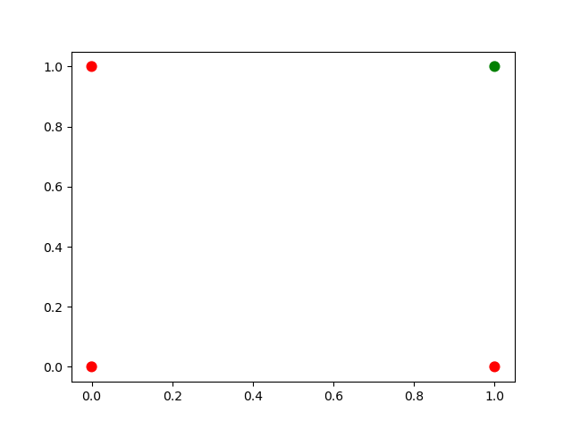
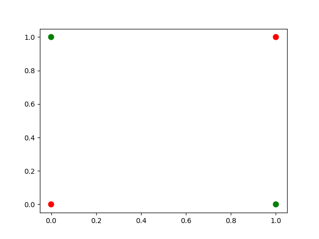

Introduction to Linear Algebra and Neural Networks
1. Introduction
1.1. Goals
- What is a neural network?
- What is a cellular Automata
- What mathematics are needed to build a neural network?
- How can neural networks help us understand cognition?
1.2. Be the Neuron
For this exercise you will need a sheet of graph paper and a rule.
Think of this rule as a mathematical function. You are going to consider a particular grid cell. You will put into your rule the list of the three cells above-left, above, and above-right and whether they are painted black or white. From that input your rule will specify an output of either "black" or "white". You color the square or not accordingly.

You should think of this rule as a computer function as well.
(defun rule0 (ns) (match ns ('('w 'w 'w) 'w) ('('w 'w 'b) 'w) ('('w 'b 'w) 'w) ('('b 'w 'w) 'w) ('('w 'b 'b) 'w) ('('b 'w 'b) 'w) ('('b 'b 'w) 'w) ('('b 'b 'b) 'w)))
We have three cells to consider, and they can each be one of two values. That means there are \(2\times2\times2\) or \(8\) cases our rule has to cover. For each of those 8 cases the output can be either of two values so we have \(2^8\) possible rules (though you might think that we only have half that many since all white or all black is pretty much the same thing).
Each rule is considered as a binary number. For example rule 0 is "00000000" because that is the binary representation of 0, whereas "00011110" is what number? 1
You can create a rule by adapting my code to change the 'w' → 'b' wherever your binary number would have a 'b'. So to make rule 110 we would change the function to:
(defun rule110 (ns) (match ns ('('w 'w 'w) 'w) ('('w 'w 'b) 'b) ('('w 'b 'w) 'b) ('('b 'w 'w) 'w) ('('w 'b 'b) 'b) ('('b 'w 'b) 'b) ('('b 'b 'w) 'b) ('('b 'b 'b) 'w)))
1.3. The activity class_exercise
- We need to have something to start with. Put a black square in the center middle of your graph paper. 2 You need to do this, because I will call on a random subset of you to exhibit your pattern.
- Send in the chat the number for the rule you are going to follow. You can pick any rule you want except for 0 or 110, or the number that anyone before you has already selected.
- Follow your rule and work across and down coloring each row based on the update of the cell above it.
- Do enough rows to get a sense of the pattern, and then message in the chat that you are done.
- Save your image. If it is a piece of paper take a picture of it. If it is a spreadsheet take a screen grab. You will have to submit that to the dropbox on learn for credit for today's activity.
- A homework for this activity will be to reproduce your rule as a bit of computer code. You will use any programming language (other than lisp) to write a function like the one I have written for outputting the color of a square based on the input of its neighbors.
(defun make-rule (rule-no) (flet ((white-or-black? (in-char) (if (string= in-char #\0) 'w 'b))) (let ((test-char (pad 8 (write-to-string rule-no :base 2) :pad-char "0" :pad-side :left))) (lambda (ns) (match ns ('('w 'w 'w) (white-or-black? (elt test-char 0))) ('('w 'w 'b) (white-or-black? (elt test-char 1))) ('('w 'b 'w) (white-or-black? (elt test-char 2))) ('('b 'w 'w) (white-or-black? (elt test-char 3))) ('('w 'b 'b) (white-or-black? (elt test-char 4))) ('('b 'w 'b) (white-or-black? (elt test-char 5))) ('('b 'b 'w) (white-or-black? (elt test-char 6))) ('('b 'b 'b) (white-or-black? (elt test-char 7))))))))
(defparameter r110 (make-rule 110)) (funcall r110 '('b 'w 'b))
B
1.4. Cellular Automata
Cellular automata provide some basic lessons that lay the ground work for thinking about neural networks.
1.4.1. Local Decisions Can Produce Interesting Global Effects
Game of Life (wikipedia link)
You can think of each cell in the grid as a neuron. It receives input via it's dendrites and it has a current state (e.g. the internal voltage). Based on its current voltage and the input to the neuron it does or does not fire. With our automata the cell's current color was its voltage and the color of the neighbors on either side were the inputs to our grid cell's dendrites.
1.4.2. You can think of cells (or units or neurons) as functions or computations
1.4.3. Automata are themselves viewed as a model of the brain
John Von Neumann Automata and the Brain
Commentary by Claude Shannon (pdf)
Copy (pdf) of the book: The Computer and the Brain
Stephen Wolfram thinks automata explain everything
2. What Math Underlies Neural Networks?
2.1. Linear Algebra
2.1.1. Objects and Operations
- Vectors
- Matrices
- Scalars
- Addition
- Multiplication (scalar and matrix)
- Transposition
- Inverse
2.1.2. Adding Matrices class_exercise
Two definitions of a vector:
- It is an object (arrow) with magnitude and direction
- It is a (by convention) column of numbers
For different purposes one or the other definition may prove more convenient.
A matrix can be considered as a collection of vectors or, in our case, as a rectangular (2-D) collection of numbers.
- Activity
Using your preferred programming language figure out how to construct an array/matrix.
Make two of them and make them the same size (what is the size of a matrix?).
Add them together in both orders (A + B and B + A)
Then do the same for multiplication. Note that there are particular requirements for the sizes of matrices in order from the to be able to be multiplied one versus another and very strict requirements for being able to be multiplied in both directions.
What is the name for the operation when A*B = B*A?
To get you started here are many different ways to create array in python and R.
2.1.3. Common Notational Conventions for Vectors and Matrices
Vectors tend to be notated as lower case letters, often in bold, such as \(\mathbf{a}\). They are also occasionally represented with little arrows on top such as \(\overrightarrow{\textbf{a}}\).
Matrices tend to be notated as upper case letters, typically in bold, such as \(\mathbf{M}\).
Good things to know: what is an inner product? How do you compute it in your preferred programming language?
2.1.4. Another Homework
Submit a simple program that accepts two matrices, checks if they are of compatible sizes, and then computes their inner product.
3. What is a Neural Network?
What is a Neural Network? It is a brain inspired computational approach in which "neurons" compute functions of their inputs and pass on a weighted proportion to the next neuron in the chain.

3.1. Non-linearities
The spiking of a neuron is non-linear. The increase in voltage with increasing input is not a straight line. To emulate this, and sometimes just to make the math easier, there is often further processing on the output of the neuron before it becomes the input to the next layer. In its simplest form this takes the form of a thresholding operation. We did something very much like this when we set a threshold for the spike in our integrate and fire model.
\begin{equation} \label{org369cb26} \mbox{if } I_1 \times w_{1,1} + I_2 \times w_{2,1} + I_3 \times w_{3,1} > \Theta \mbox{ then } Output = 1 \end{equation}What this equation shows is that Inputs (the \(I\) s) are passed to the first layer. A weighted sum (inner product) is computed as an intermediate value. The weighted sum is fed into a threshold function that compares the value to a threshold (\(\Theta\)), and passes on the value 1 if it is greater than the threshold and 0 (sometimes \(-1\) is chosen) otherwise.
3.2. Questions:
- What, geometrically speaking, is a plane?
- What is a hyperplane?
- What is linearly separability and how does that relate to planes and hyperplanes?
3.3. Examples
3.3.1. AND
import matplotlib import matplotlib.pyplot as p cs = ["#ff0000","#ff0000","#ff0000","#008000"] p.scatter([0, 1, 0, 1],[0,0,1,1],color=cs,s = 60) p.savefig("and.png")

3.3.2. XOR
import matplotlib import matplotlib.pyplot as p cs = ["#ff0000", "#008000", "#008000", "#ff0000"] p.scatter([0, 1, 0, 1],[0,0,1,1],color=cs,s = 60) p.savefig("xor.png")

3.3.3. Optional Reading
This short article provides a nice example of linear separability and some basics of what a neural network is.
{kind=link}
4. Connections
Can neural networks encode logic? Is the processing zeros and ones enough to capture the richness of human intellectual activity?
In fact there is a long tradition of representing human thought as the consequence of some sort of calculation of two values (true or false). If you have two values you can swap out 1's and 0's for the true and false in your calculation. They even seem to obey similar laws. If you the conjunction (AND) of two true things it is only true when both are true. If you take T = 1, then T ∧ T is the same as \(1~\times~1\).
In the next section we will build up a simple threshold neural unit and try to calculate some of these truth functions with our neuron. We will build simple neurons for truth tables (like those that follow), and string them together into an argument. Then we can feed values of T and F into our network and let it calculate the XOR problem.
4.1. Boolean Logic
- George Boole, Author of the Laws of Thought
- Read the book on Archive.org
- Read about George Boole.
4.2. First Order Logic - Truth Tables
Or
Table 1: Or Pr A Pr B Or 0 0 0 0 1 1 1 0 1 1 1 1 And
Table 2: And Pr A Pr B Or 0 0 0 0 1 0 1 0 0 1 1 1
Nand
Table 3: Nand Pr A Pr B Or 0 0 1 0 1 0 1 0 0 1 1 0